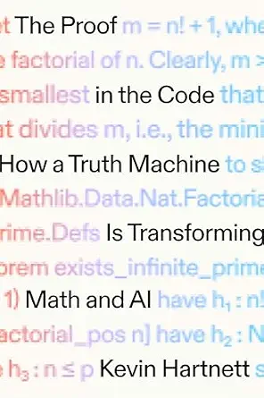

(Audio) The proof in the code, by Hartnett
Saturday August 1, 2026
Kevin Hartnett, that prolific writer for Quanta Magazine, has written the first book published by Quanta Books. It's a solid human-oriented history of Lean and its increasing importance in formalizing mathematics and in connection with AI.
I'm excited for the next two books coming out from Quanta: Six Math Essentials from Terry Tao, and Everything Is Fields from David Tong. In the latter case, it seems we have the Simons Foundation publisher publishing a book from a professor whose position is funded by the Simons Foundation. I did a Simons Foundation fellowship myself, but I mean... doesn't it seem like it would be great for things like this to not depend on hedge fund money? Regardless, those two books look like they should be great!
I hadn't realized how much Lean and even more so Z3 and other parts of de Moura's work are related to satisfiability. It's not exactly the same, but it's related even to the CP-SAT kinds of stuff I did a little bit of work with a while ago. (CP-SAT is Constraint Programming - Satisfiability, like OR-Tools. SMT is Satisfiability Modulo Theories, like Z3. And then Lean is basically a type checker with a lot of tooling for writing types: applied Curry-Howard correspondence.)
I tried the current version of the Natural Number Game and proved 2+2=4 using simple tactics. I installed Lean (doing it inside VSCode is highly recommended) but really the web version is enough to play around with.
It's a little strange reading a "history" that's so recent. Some of the more distant history was also interesting. I hadn't realized that Leibniz had an effort to formalize all human reasoning, and thought that people could settle disputes by using his system of formal logic. Hartnett failed to note that this was published when Leibniz was 20, and Leibniz seems to have later found it embarassing.
It's interesting thinking about the extreme formalization here in comparison to Cheng's book... The concern here is with correctness, like Bourbaki on steroids. Tao is excited about it because it helps math "scale" beyond what one person can do, what one person can understand, I think. If AI can write a proof, it can be verified formally, whether or not anyone understands how the proof works. It's almost the opposite mathematical view to what Cheng and I think is important, which is the human understanding aspect.
